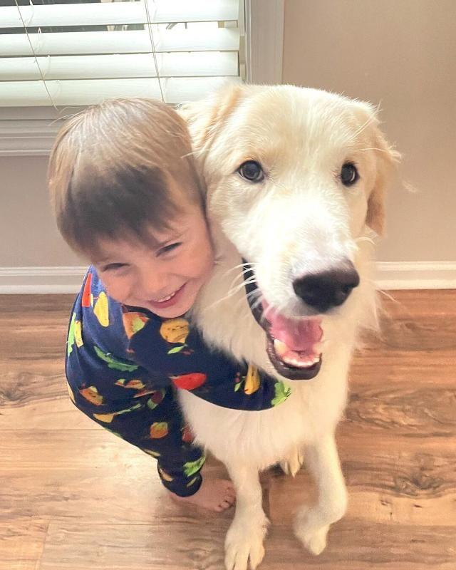
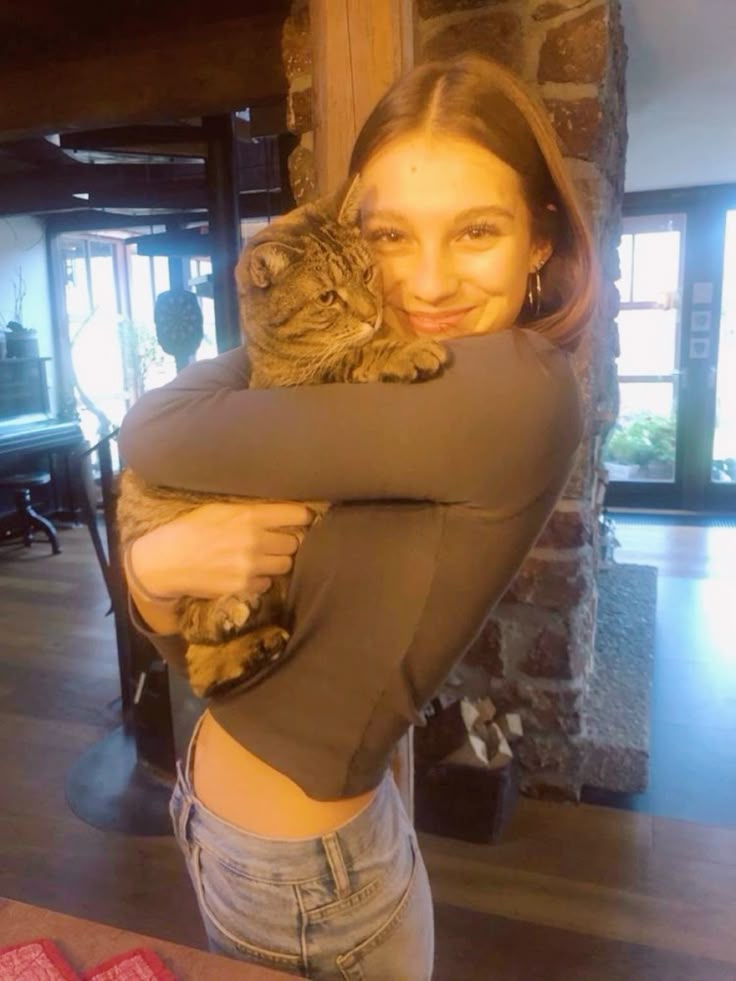
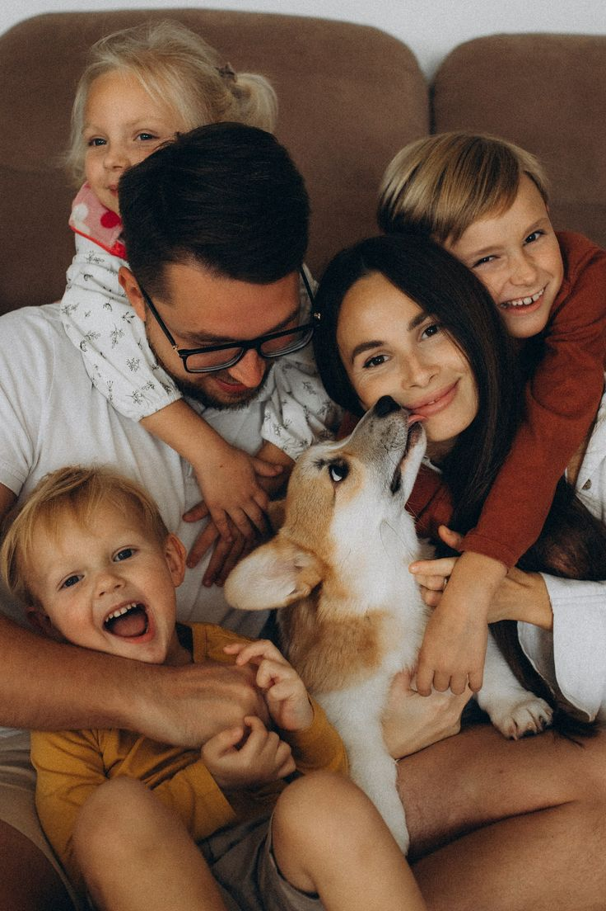
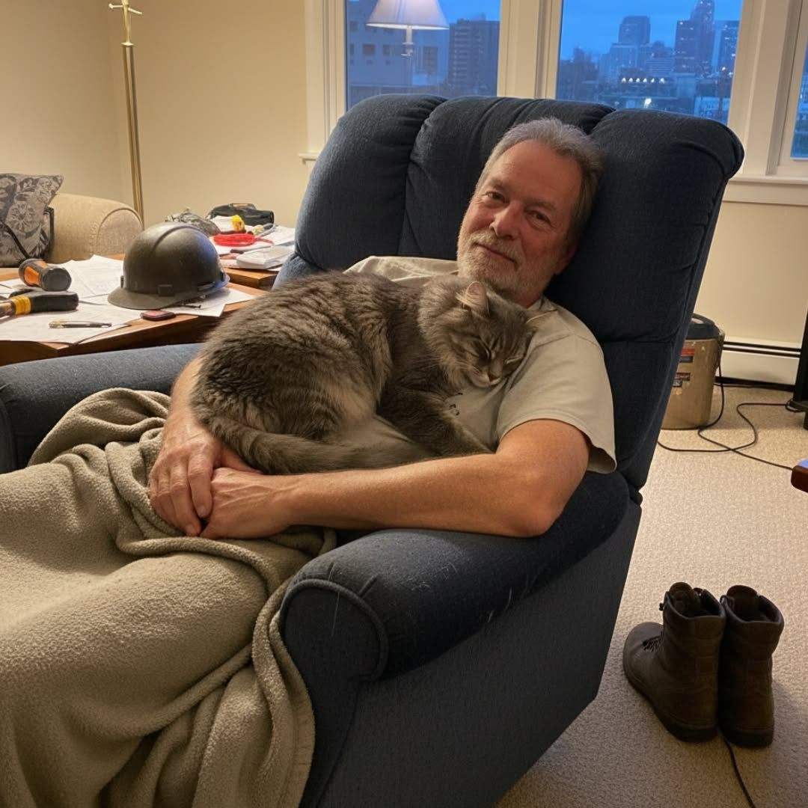

Because every pet deserves a second chance and a happy ending.

Max was found wandering alone on a quiet street, weak, hungry, and afraid of every sound around him. When he was brought into the shelter, he avoided eye contact and stayed curled up in a corner, unsure of who to trust.
Days passed, and many people walked by without noticing him. But one afternoon, a couple sat beside him patiently, giving him the time and space he needed. Slowly, Max began to open up. Today, he runs freely in parks, plays with his favorite toys, and sleeps peacefully beside his family. His story is a beautiful reminder that even the most broken hearts can heal with love and patience.

Luna spent months in a shelter, quietly watching as other cats were chosen and taken home. She wasn’t the loudest or most playful, which often meant she was overlooked by visitors.
Everything changed when someone saw beyond her silence and noticed her gentle nature. After being adopted, Luna slowly adjusted to her new life. Now, she enjoys long naps in the sunlight, cozy blankets, and the warmth of a loving home. Her journey shows that sometimes the quietest souls have the most love to give.

Rocky’s early life was filled with neglect, leaving him fearful and unsure of people. He would shy away from any attempt at affection and struggled to trust anyone who came near him.
When a family decided to adopt him, they knew it would take time. Through patience, gentle care, and consistent love, Rocky slowly began to change. Today, he is full of energy, loves playing fetch, and greets everyone with excitement. His transformation proves that with the right care, even the most difficult beginnings can lead to a happy ending.

Milo was one of the shyest animals in the shelter. He would hide behind objects and avoid attention, making it easy for visitors to miss him entirely.
A kind-hearted adopter decided to give Milo a chance, even though he was quiet and withdrawn. Over time, Milo began to trust again. He started exploring, playing, and eventually seeking affection. Today, he is a joyful and loving companion. His story is a powerful reminder that every animal deserves a chance, no matter how small or quiet they may seem.